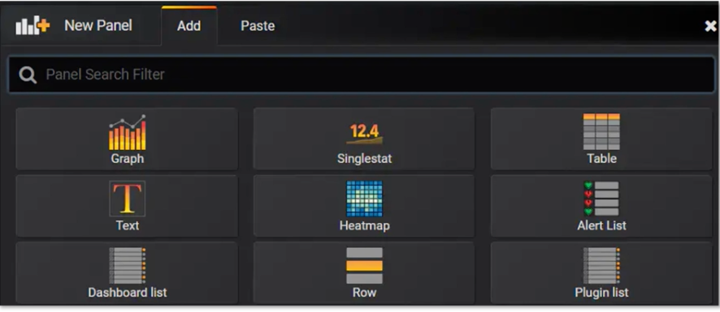

第九节 利用 Prometheus 和 Grafana 收集监控数据
1、传统监控系统
监控系统通常由指标采集子系统和数据处理子系统组成。
指标采集子系统主要负责信息采集、过滤、汇总和存储；
数据处理子系统主要负责数据分析、展现、预警和告警等。传统的监控系统一般有ELK 和 Nagios & Zabbix。
1-1 ELK
ELK 是 Elastic 公司推出的监控系统，包含了 Elasticsearch、Logstash 和 Kibana，分别作为存储引擎、日志收集和前端展示系统。
其中Elasticsearch 是核心，其他两个都可以替换，较常见的替换方案是 Filebeat 和 Graylog。
- Filebeat 是由 Go 语言编写的轻量级日志收集工具。日志可以直接传输到 Elasticsearch 中，可以传输到 Logstash 进行一些数据处理。
- 而Graylog 是一套代替 ELK 的日志收集分析系统，其中保留了 Elasticsearch 的存储部分，提供了 collector-sidecar 用于日志收集，并继承了 Web 图形界面，用于搜索和图形化展示。
总体来说，ELK 是一套传统的可观测性系统，主要利用我们之前提到的可观测性组件之一——日志来提供监控功能，优点是数据准确性高，但由于日志需要存储和建立索引，成本会比较高
1-2 Nagios & Zabbix
Nagios 和 Zabbix 都是传统的运维监控工具，主要监控主机、网络，以及业务进程端口的信息和状态。主要以插件的方式进行扩展，通过插件扩展可以检测主机的 CPU、内存、硬盘等信息，也可以检测各种不同的网络协议，但对于检测微服务应用程序内的信息几乎是无能为力的。
应用自身的黄金指标（延时、通信量、饱和度、错误率）和一些业务级别的指标都需要实时的可观测。
2、现代化常用的 Metrics 系统
Metrics 主要是用时序性数据库记录每个时间点的监控数据，通过主动拉取或者程序上报的方式记录，然后实时计算一段时间的数据，并通过图形界面的方式展现出来。它的特点是实时性强、可观测指标丰富，适合查看一段时间内的指标趋势。
2-1 StatsD+Graphite
StatsD 是 Node.js 编写的一个Metrics 指标采集系统，通过 UDP 协议将信息传输到后端程序，聚合后存储到 Graphite。
StatsD 包含三个组成部分，分别是：
- Client，各种语言使用的 SDK，用于将 Metrics 信息通过 UDP 的方式传送到 Server。
- Server，收集客户端传输的 Metrics 信息，聚合后发送到 Backend，也就是 Graphite。
- Backend，也就是上面提到的 Graphite，Graphite 是一个时序数据库，负责存储 Metrics 信息。
2-2 InfluxDB+Telegraf
- InfluxDB 是一个时序数据库，负责 Metrics 信息的存储；
- Telegraf 是一套 Metrics 收集系统，默认自带非常丰富的插件，用于采集系统级别的信息，如果要采集应用维度的信息，则需要编写插件。
2-3 Prometheus
Prometheus 是 Cloud Native Computing Foundation（简称：CNCF）生态圈的一员，也是整个 Kubernetes 生态中重要的一环，现已经广泛用于 Kubernetes 集群监控中。
Prometheus 与上面的两个 Metrics 系统最大的不同，是提供了一整套完整的监控告警解决方案，包含了数据采集、数据存储和告警。
另外还有两个非常重要的特性，也是现代化监控系统的必要标志：
- 采用了 pull 拉取的模型采集数据，简化了客户端的代码编写成本，并且 HTTP 协议非常利于调试。
- 支持服务发现，默认支持了 Consul 和 Kubernetes 原生发现系统，避免了繁杂的机器信息配置。
3、Prometheus 组成和架构
3-1 Prometheus 架构模块构成
- Prometheus Server：用于收集和存储 Metrics 数据。
- Service Disvovery：用于服务发现，获取服务对应的 EndPoint 用于数据采集，默认支持 DNS、Consul、Kubernestes 等多种发现方案。
- PushGateway：提供推送的方式采集数据，主要用于 Job 类，Job 类程序可能存活时间比较短，不适合采用拉取的方式。另外一些非常驻进程的脚本语言，比如 PHP，也需要使用此种方式。
- Exporters：用于一些第三方服务，通过转换提供符合 Prometheus 规范的 Metrics 信息，比如 Node Exporter 提供节点相关的信息。BlackBox 方便用户使用 HTTP、TCP 等方式对应用进程探活，以监控应用状态。
- Client Library：为各种语言提供的客户端库，提供 HTTP 服务的 Metrics 接口，当 Prometheus Server 拉取时，提供实时的 Metrics 数据。
- Alertmanager：告警管理器，接收 Prometheus Server 发来的告警信息，去除重复信息，分组后发送给相应的人员。通知方式支持 Email 和 WebHook 自定义等，一般会通过 WebHook 接入钉钉或者企业微信以达到实时报警的目的。
3-2 Prometheus 数据模型
negri_http_request_total{client="serviceA",code="200",exported_service="serviceB",path="/ping"}
- Metrics 名字：首先是 Metrics 的名称，Metrics 的名称表明了这条数据的用途，比如上面这个数据是 Negri Sidecar 统计的总的请求数量。
- Label 标签：这条数据中的 client、code、
exported_service和 path 都是标签，通过标签可以组成不同的查询语句，从不同维度获取数据。
3-3 Prometheus 的 Metrics 类型
Counter
累加值，非常适合统计 QPS。
这个数据从服务开始就不停地累加，比如上面提到的 negri_http_request_total 就是一种 Counter 类型。
它统计了服务启动至目前所有请求的数据，通过 rate 或者 irate 就可以计算出一段时间内的 QPS。Counter 类型是 Prometheus Server 端计算的，相对于下面讲到的 Gauge，占用服务自身更少，建议高性能的微服务首选此种类型。
Gauge
适合记录瞬时值，比如统计一些突发事件，例如是否产生了熔断、限流等事件。
因为是客户端 SDK 计算的，不太适合一些经常变化的数据。如果数据是一直增加的，建议使用 Counter；当然如果数据有增有减，也比较适合，因为监控中很少遇到增减比较频繁的数据。
degrade_events{event="eventBreakerOpenStatus",service="serviceB"}
Histogram
柱状图，适合统计服务的 99 延时等信息，比如下面的例子就是用于统计服务的延时状况：
negri_http_response_time_us_bucket{client="serviceA",exported_service="serviceB",le="0.5",path="/ping"}
如上述内容，可以通过查询语句绘制出 90 延时、95 延时、99 延时等指标， Histogram 和 Counter 类型一样，都是 Prometheus Server 端计算的，所以非常适合高性能的场景使用，相对于下面讲解的 Summary 有更小的损耗。
Summary
类似于 Histogram，适合统计服务的 99 延时信息。
Summary 和 Gauge 类型一样，都是在程序内计算的，所以并不能像 Histogram 一样，在绘制图形的时候灵活的设置百分位，
但相对来说，Summary 的数据也更加精准。
2-4 Grafana 图形化展示
Grafana 是一套可视化监控指标工具，主要用于时序数据的展示，包括 Graphite、Elasticsearch、InfluxDB、Prometheus、CloudWatch、MySQL 和 OpenTSDB。这些数据源大多数我们在前面做过介绍。其中最常见的就是 Prometheus+Grafana 的组合。

通过 Grafana 展示服务一段时间内的运行状态，包括常见的 QPS、延时等信息。
2-5 常见问题
Prometheus 适合什么样的监控场景？
Metrics 数据监控，并不适合要求数据 100% 准确的场景，更多的是反映一段时间内某个数据指标的趋势和大概值。采集数据是存在间隔的，计算数据也是有时间区间的，所以很难反映某一时刻的准确值，比如 CPU 的峰值，大概率会被平均掉。如果要查看精准数据，最好通过日志的方式收集后检索查看。
单个服务节点 Metrics 数量限制
Prometheus 虽然性能强大，但如果无规范的使用，随着采集数据节点增多，依然难以保证其稳定性。比如一些 RESTful 规范的 path（比如 /test/123，其中 123 为变量），如果不采取一些措施聚合，会造成 Metrics 爆炸。Metrics 的爆炸不仅会导致服务 OOM，也会导致 Prometheus 的内存使用量增大和检索变慢。
另外过多的标签变量、过多的 Histogram bucket，都会导致 Metrics 数量的增加。比如不合理地记录了调用端的来源 IP，同时也记录了服务自身的 IP，两者的 Metrics 数量就会变成乘积关系。这些不合理的指标不光会影响服务自身，也会影响 Prometheus 的稳定性，所以在输出 Metrics 信息的时候一定要注意，应该限制程序 Metrics 数量，加一个默认的上限条件。
RESTful path 如何处理？
无论是在 Metrics 系统中，还是 Trace 系统中，都会遇到此类问题。RESTful 格式的 path 在某一阶段非常流行，特别是在 PC 互联网时代非常适合搜索引擎的 SEO，而且看起来美观，所以被广泛使用。
如果说在 Web 客户端使用还有因可循，但在微服务架构的内网使用就完全不可理解了，毕竟内网无法被搜索引擎搜索到。
所以在微服务架构中，如果使用 HTTP 协议作为通信协议，建议抛弃 RESTful 的做法。